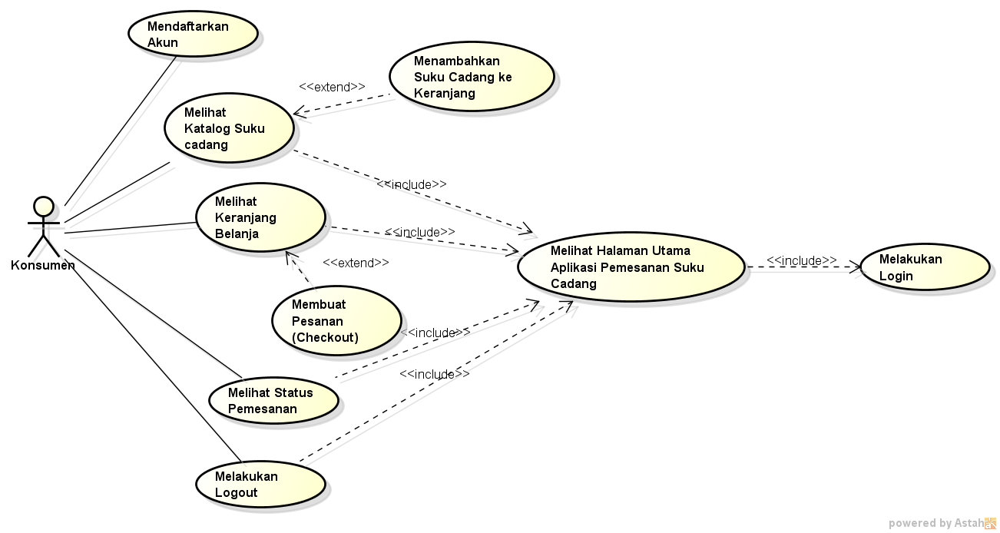

Nama : M.Fachrudin
NIM : 1811500008
Kelompok : TI6A
Hasil saya menyadur ke 4 :
pertemuan ke 4 absensi saduran
memahami sistem pada usecase diagran dan apa saja yang harus diperlukan ketika membuatnya
pada perancangan usecase diagram, harus memerlukan suatu diagram usecase yang berisi proses didalamnya
dan diperlukan juga deskripsi usecase dimana pada deskripsi tersebut dijelaskan secara sistematis cara kerja pada aktivitas usecase
Download file word usecase diagran dan deskripsinya disini
Download file latihan astah disini
